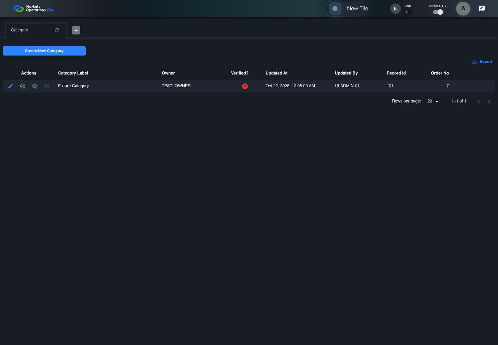

UI-ADM-CAT-002 actual administration UI with step evidence
PASS · application/run-050/ui-adm-cat-002-actual-administration-ui-with-step-evidence-d7ba28e4b464-attempt-1 · ACTUAL_APPLICATION_LOCAL_SERVICES
Actual current React administration screens. Controlled browser login supplies UI-ADMIN-01 and TEST_OWNER, or the declared SUPER_USER. Controlled BFF routes return the case-declared records. Other controlled saves persist submitted field values. This run establishes frontend handling only. It does not execute BFF validation, storage, audit generation, or authorization.
2026-10-22T05:58:55.764Z to 2026-10-22T05:59:00.087Z
Assertions and result · Artifact manifest · Exact run inputs and source hashes
Result SHA-256:1937d690c56589cbe3e9dd6f80c5941219f98c9d6f3cafa237e0a9726e22a4c2Machine observations
- new-record-source-identity.json
842681eadf6f960a2d4129d7257f035d1a6d236f04a89732f8cf7614ed873eee - ui-origin-admin-requests.json
2e0fe182f60c9ff94fa6b6f714de211ce20e616e862e3a9797916cec95e8ab5e
Screenshot capture: CAPTURED. Named frames: 11.
Step screenshot bindings: COMPLETE. 10/10 canonical steps have execution screenshots.
Bindings measure structural coverage only. They do not establish screenshot content quality or relevance.
Screenshot content review: NOT_REVIEWED. Recorded context: 0/11 frames. Identical image bytes: 6 repeated frames. Recorded context does not establish human visual review.
Canonical step timeline
Given Admin A is authenticated as fixture UI-ADMIN-01 with the case-specific permissions
Execution: PASSED.
1. step-01 Visible state after step 1: Given Admin A is authenticated as fixture UI-ADMIN-01 with the case-specific permissions
2026-10-22T05:58:57.981Z · 1440×1000
Step: /Users/lushevol/code/github/ratan-release-impact/workbench/tasks/ui-test-coverage-20261022/test-cases.md:7697
SHA-256:21fef8241aa6f773bcf0171251c7fc932d4db276f62151bfcd6973cc7673d181And the Category admin screen is open for UI-ADMIN-01; fixture record 101 is inactive and has Category Label Fixture Category; its owner is TEST_OWNER
Execution: PASSED.
2. step-02 Visible state after step 2: And the Category admin screen is open for UI-ADMIN-01; fixture record 101 is inactive and has Category Label Fixture Category; its owner is TEST_OWNER
2026-10-22T05:58:58.859Z · 1440×1000
Step: /Users/lushevol/code/github/ratan-release-impact/workbench/tasks/ui-test-coverage-20261022/test-cases.md:7698
SHA-256:84e9d8239d996e3bf6efea316b2ab65268c08dc2572e99c9e67198da43a36e40When Admin A clicks button named "Create New Category" inside the "Category" administration tabpanel
Execution: PASSED.3. step-03 Visible state after step 3: When Admin A clicks button named "Create New Category" inside the "Category" administration tabpanel
2026-10-22T05:58:59.080Z · 1440×1000
Step: /Users/lushevol/code/github/ratan-release-impact/workbench/tasks/ui-test-coverage-20261022/test-cases.md:7699
SHA-256:853daa3a54374cdd555da9f4bdb72150257fc54249c88a45f25d7d282a2bbcdbThen dialog with source identity "new ID: <captured fixture timestamp>" inside the "Category" administration tabpanel is visible
Execution: PASSED.
4. step-04 Visible state after step 4: Then dialog with source identity "new ID: <captured fixture timestamp>" inside the "Category" administration tabpanel is visible
2026-10-22T05:58:59.163Z · 1440×1000
Step: /Users/lushevol/code/github/ratan-release-impact/workbench/tasks/ui-test-coverage-20261022/test-cases.md:7700
SHA-256:ab84c24ee473d03ffd6e100de6eca1d3417a55062926fc4f608fa24e57cdd279And button named "Create" inside the new-record dialog inside the "Category" administration tabpanel is visible
Execution: PASSED.
5. step-05 Visible state after step 5: And button named "Create" inside the new-record dialog inside the "Category" administration tabpanel is visible
2026-10-22T05:58:59.259Z · 1440×1000
Step: /Users/lushevol/code/github/ratan-release-impact/workbench/tasks/ui-test-coverage-20261022/test-cases.md:7701
SHA-256:ab84c24ee473d03ffd6e100de6eca1d3417a55062926fc4f608fa24e57cdd279Image bytes match frame 4. An unchanged image can be valid for consecutive assertions. This match does not establish correct step content.
And button named "Reset" inside the new-record dialog inside the "Category" administration tabpanel is visible
Execution: PASSED.
6. step-06 Visible state after step 6: And button named "Reset" inside the new-record dialog inside the "Category" administration tabpanel is visible
2026-10-22T05:58:59.328Z · 1440×1000
Step: /Users/lushevol/code/github/ratan-release-impact/workbench/tasks/ui-test-coverage-20261022/test-cases.md:7702
SHA-256:ab84c24ee473d03ffd6e100de6eca1d3417a55062926fc4f608fa24e57cdd279Image bytes match frame 5. An unchanged image can be valid for consecutive assertions. This match does not establish correct step content.
And button named "Close" inside the new-record dialog inside the "Category" administration tabpanel is visible
Execution: PASSED.7. step-07 Visible state after step 7: And button named "Close" inside the new-record dialog inside the "Category" administration tabpanel is visible
2026-10-22T05:58:59.394Z · 1440×1000
Step: /Users/lushevol/code/github/ratan-release-impact/workbench/tasks/ui-test-coverage-20261022/test-cases.md:7703
SHA-256:ab84c24ee473d03ffd6e100de6eca1d3417a55062926fc4f608fa24e57cdd279Image bytes match frame 6. An unchanged image can be valid for consecutive assertions. This match does not establish correct step content.
And textbox named "Verified?" inside the new-record dialog inside the "Category" administration tabpanel has value "false"
Execution: PASSED.
8. step-08 Visible state after step 8: And textbox named "Verified?" inside the new-record dialog inside the "Category" administration tabpanel has value "false"
2026-10-22T05:58:59.453Z · 1440×1000
Step: /Users/lushevol/code/github/ratan-release-impact/workbench/tasks/ui-test-coverage-20261022/test-cases.md:7704
SHA-256:a59921c7b032804143b8eb07da72ab0be2e83899773d4027ab68f1a1f871e5a8And textbox named "Created By" inside the new-record dialog inside the "Category" administration tabpanel has value "UI-ADMIN-01"
Execution: PASSED.
9. step-09 Visible state after step 9: And textbox named "Created By" inside the new-record dialog inside the "Category" administration tabpanel has value "UI-ADMIN-01"
2026-10-22T05:58:59.513Z · 1440×1000
Step: /Users/lushevol/code/github/ratan-release-impact/workbench/tasks/ui-test-coverage-20261022/test-cases.md:7705
SHA-256:a59921c7b032804143b8eb07da72ab0be2e83899773d4027ab68f1a1f871e5a8Image bytes match frame 8. An unchanged image can be valid for consecutive assertions. This match does not establish correct step content.
And textbox named "Updated By" inside the new-record dialog inside the "Category" administration tabpanel has value "UI-ADMIN-01"
Execution: PASSED.10. step-10 Visible state after step 10: And textbox named "Updated By" inside the new-record dialog inside the "Category" administration tabpanel has value "UI-ADMIN-01"
2026-10-22T05:58:59.594Z · 1440×1000
Step: /Users/lushevol/code/github/ratan-release-impact/workbench/tasks/ui-test-coverage-20261022/test-cases.md:7706
SHA-256:a59921c7b032804143b8eb07da72ab0be2e83899773d4027ab68f1a1f871e5a8Image bytes match frame 9. An unchanged image can be valid for consecutive assertions. This match does not establish correct step content.
Additional named frames

The final visible state after the named test assertions.
2026-10-22T05:58:59.715Z · 1440×1000Step: Test source: /Users/lushevol/code/github/ratan-release-impact/workbench/e2e/audit-specs/admin-expanded.spec.ts:15
SHA-256:
a59921c7b032804143b8eb07da72ab0be2e83899773d4027ab68f1a1f871e5a8Image bytes match frame 10. An unchanged image can be valid for consecutive assertions. This match does not establish correct step content.
Screenshots establish visible state only. Assertions and traces support functional claims.